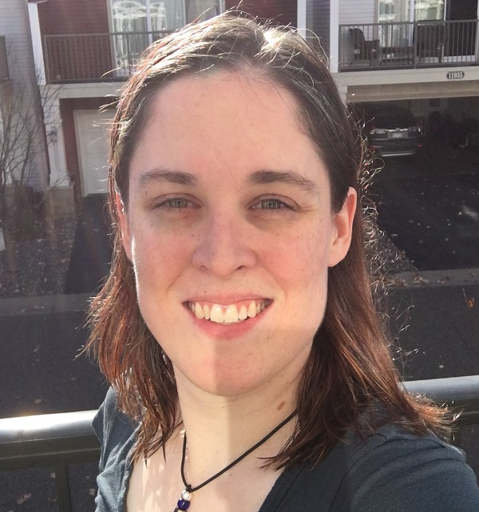

About Me

I am an aspiring software developer living in Champlin, Minnesota with my fiance and two cats.
I have a history of working in the medical laboratory field, and recently made the decision to switch careers fields and move to the technology sector.
I hope to bring my medical experience to bear in making great software and websites to organizations around the country!
Past Experiences

I worked for four years as a certified Medical Laboratory Scientist for the Fairview Health Services network, and most recently worked one year for Memorial Blood Centers performing advanced laboratory testing and blood banking work.
I have been published in the scientific journal G3 | Genes, Genomes, Genetics.
I felt that these experiences gave me valuable communication skills, attention to detail, and multitasking ability,
and I hope to apply them to my future career in technology.
Hobbies

When not working, I enjoy being physically active through yoga and walking. I a playing with my cats, and playing computer games such as Minecraft.
I especially love learning whatever I can about the scientific and natural world, whether that be through watching documentaries, reading non fiction books, or watching informative YouTube videos.